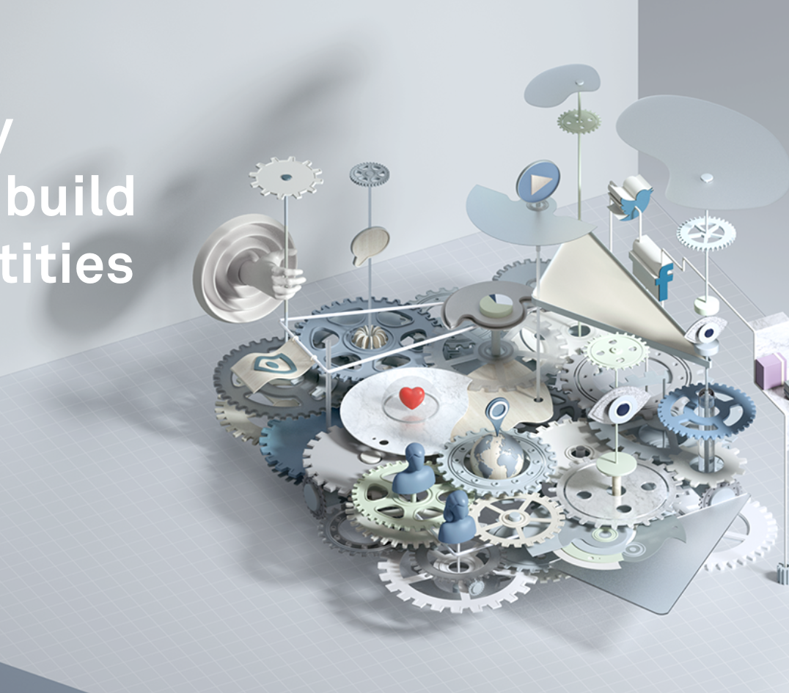
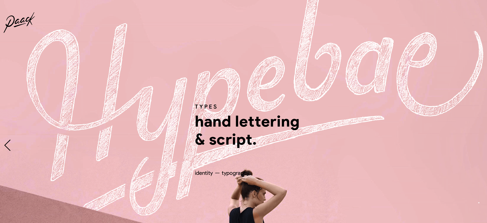

Week 4 - February 22, 2017

Nedd is a consulting agency specialised in brand strategy, identity and experience.
Nedd

Nicolas Garcia aka Paack, a freelance Art Director and Designer
from french mediterranean city, currently living in Montpellier.
paack